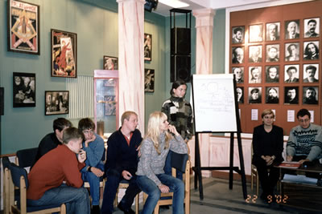
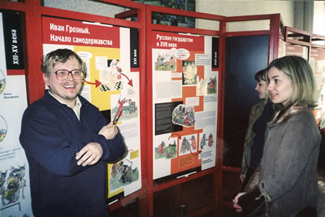
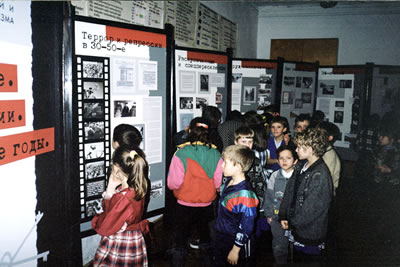
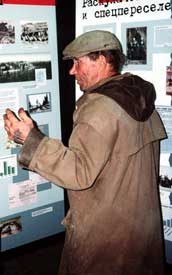

Online Exhibit → Gulag Museum
Issues of Conscience

Perm-36 closed in 1988, one of the last camps to close in the Soviet Union. In 1991, Memorial Society activists, who wanted to preserve a forced-labor camp to serve as a memorial to the Gulag victims, organized to save the former camp.
By the early 1990s, Perm-36 lay in ruins. KGB officicals had destroyed much of the facility after Ukrainian Television crews filmed and broadcast the facility where internationally renowned poet Vasyl Stus had died from neglect in 1985. Reconstruction efforts allowed the Museum to open in 1996, although rehabilitation of the early wooden structures continues today.
Today Perm-36 is open to the public as a historic site and museum. The Gulag Museum has focused much of its energy on reaching out to school-age Russians, many of whom know little of the Gulag past. These students, and thousands of others from Russia and abroad, come to visit this restored Gulag camp. Here they can see first hand the punishment cell, the cramped Stalin-era barracks, the exercise yards, and the guard towers. They can also participate in workshops about the history of Soviet totalitarianism.
The Museum received international recognition for its preservation and educational work when the World Monument Fund placed Perm-36 on the list of 100 Most Endangered Sites in 2004.


Giving a history lesson at the Gulag Museum. Students in the Perm region travel to the Gulag Museum to learn about the Soviet Union’s repressive past.
Courtesy of the Gulag Museum at Perm-36.



Gulag Museum traveling exhibitions.
Courtesy of the Gulag Museum at Perm-36.

Repression, a traveling exhibition focusing on the 1930s and 1940s.
Courtesy of the Gulag Museum at Perm-36.Online Exhibit | Reflections | Traveling Exhibit | Teacher Resources | About
© 2006–2021, Center for History and New Media, George Mason University.